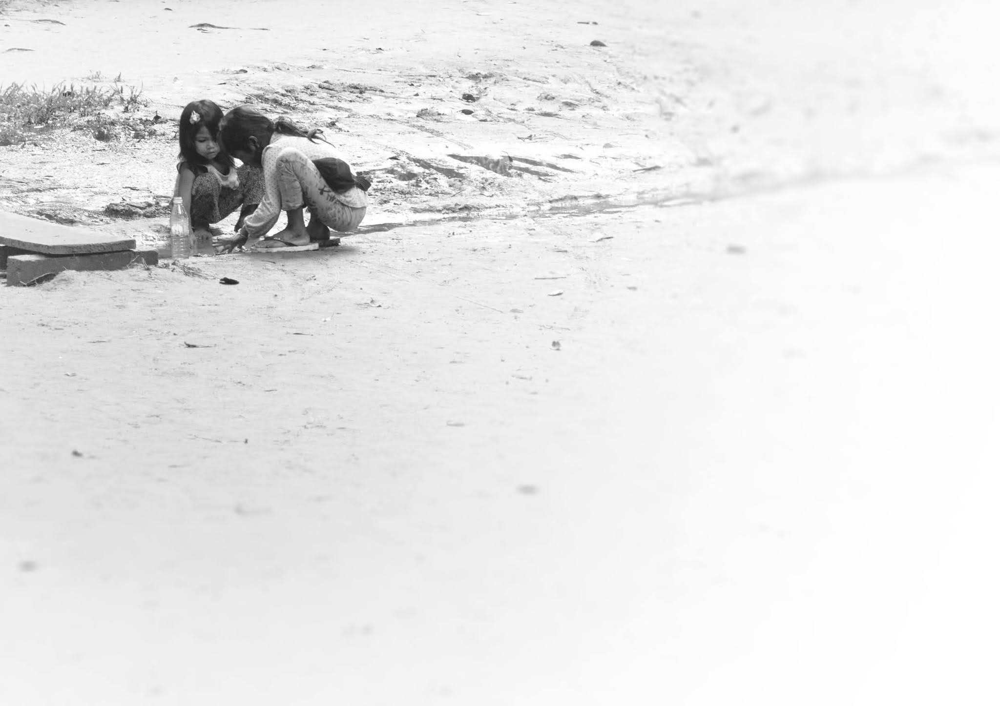
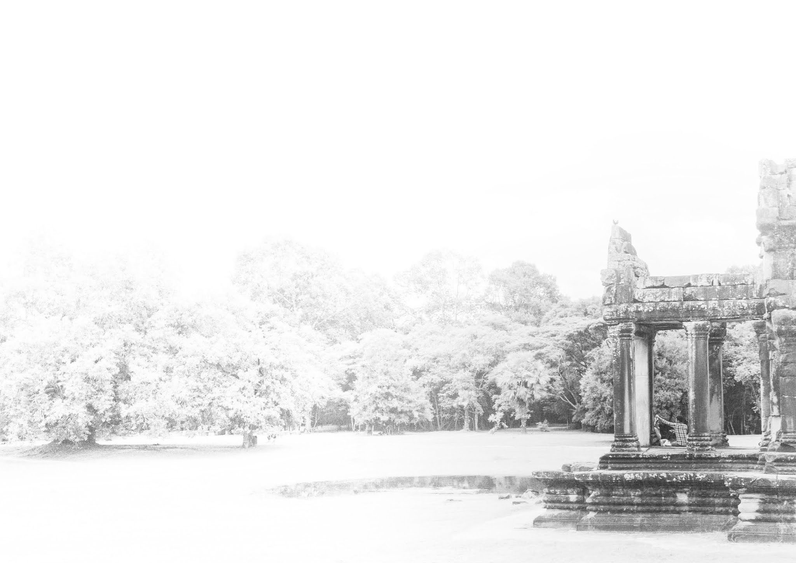
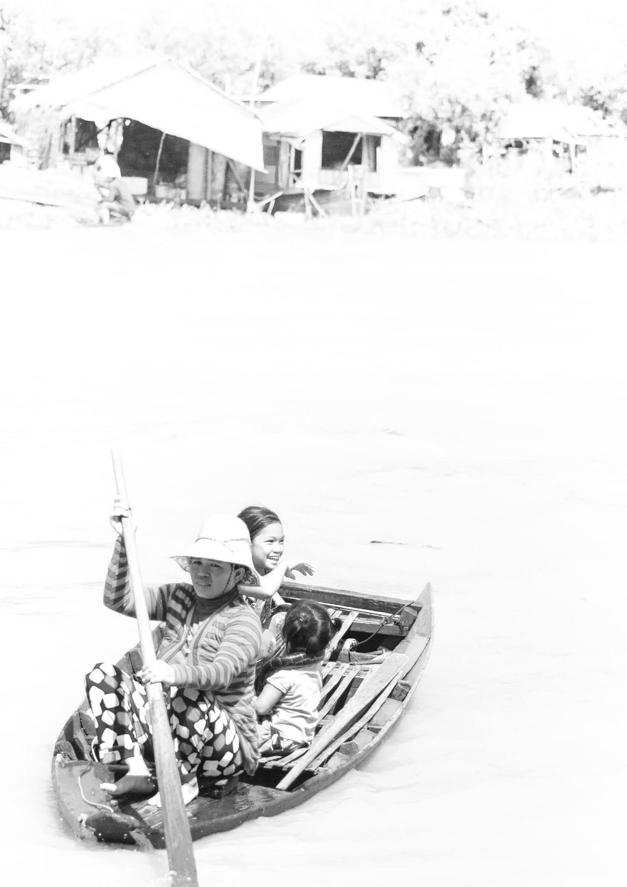
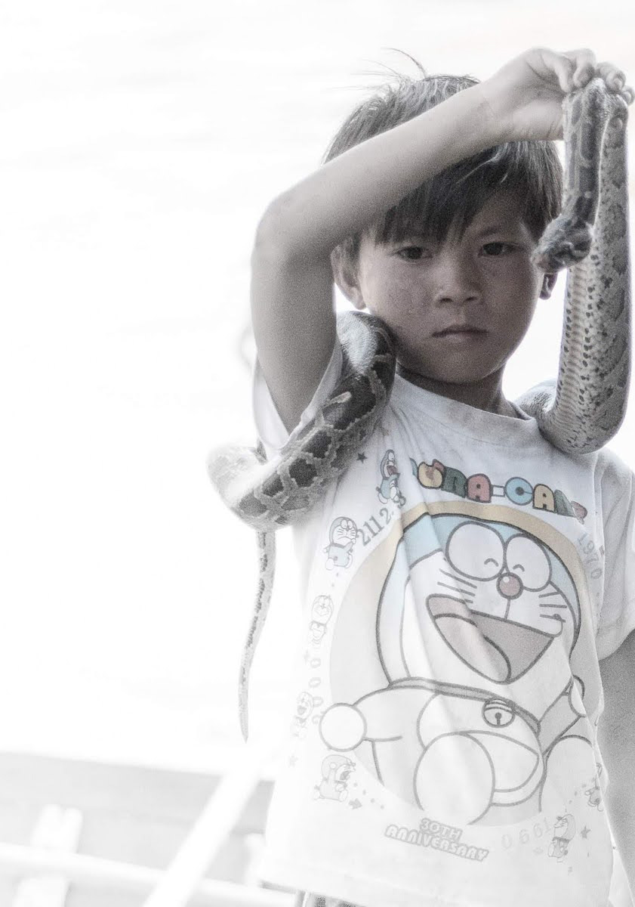
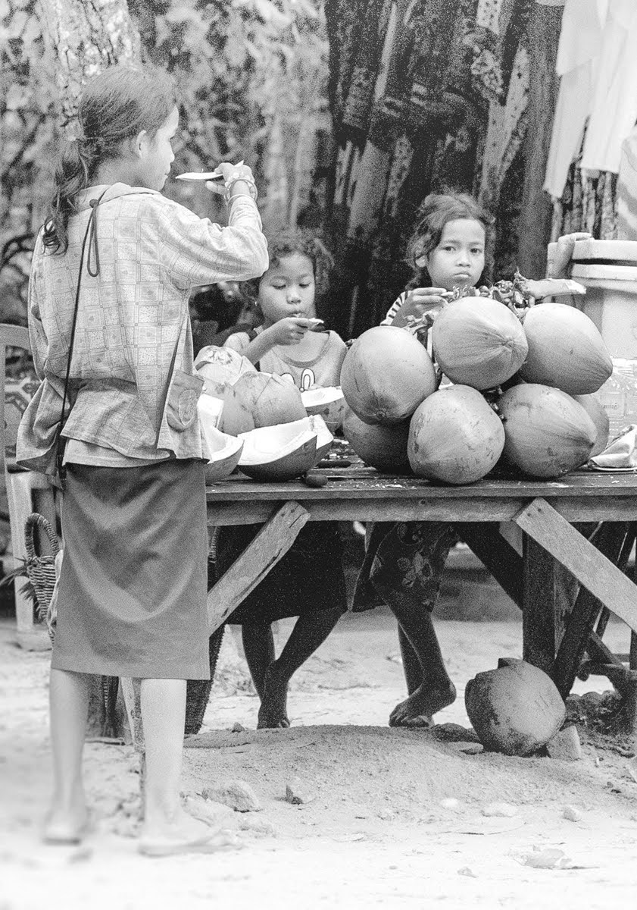
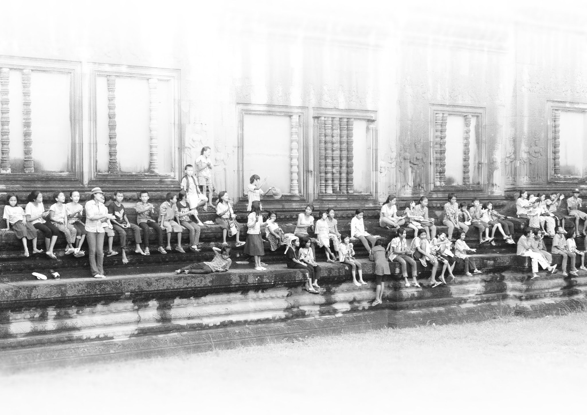
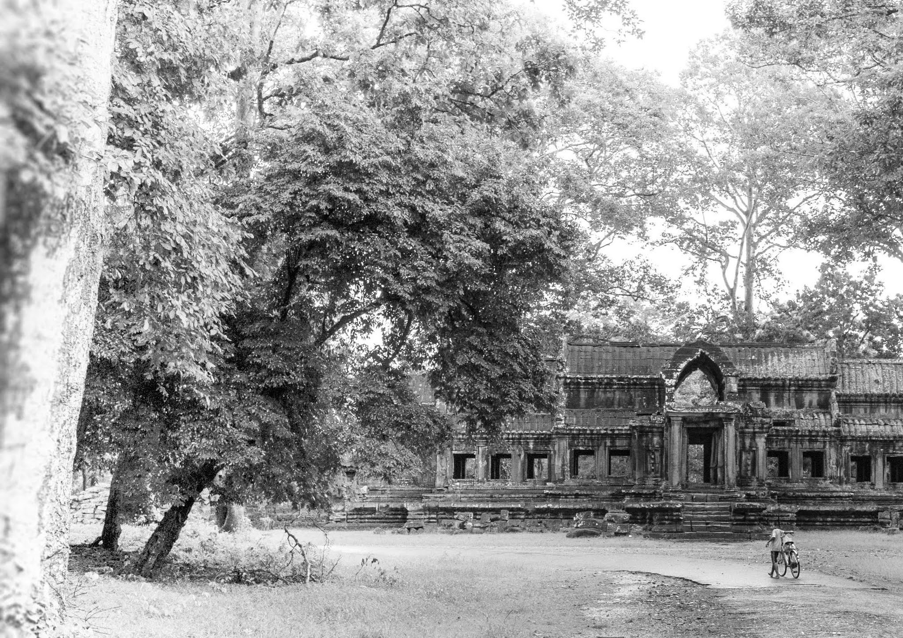
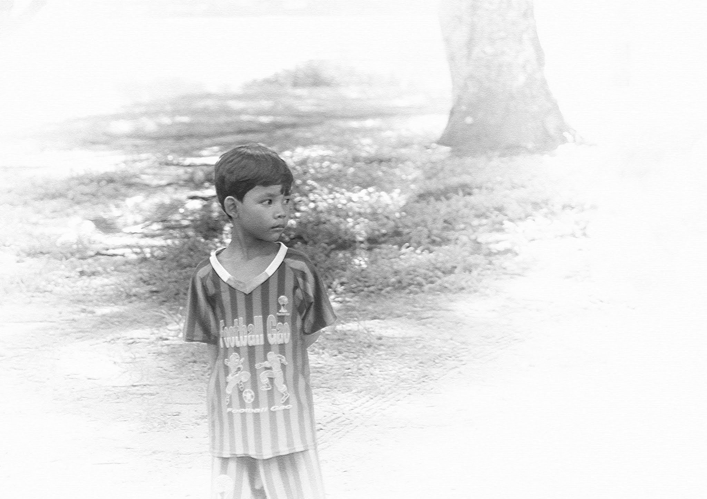
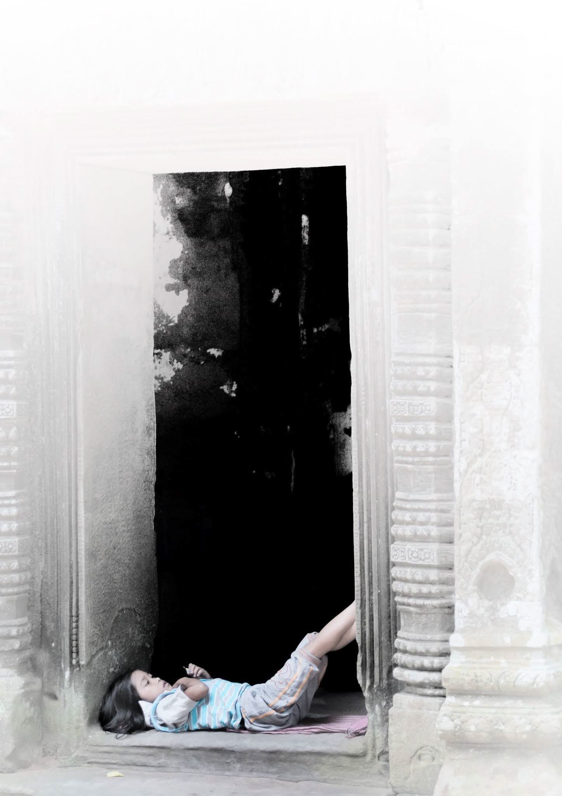

Photography
Cambodian Children
This is a collection of works photographed focusing on the children of Cambodia. I experimented with various techniques to enhance the presence of the children, such as eliminating the presence of the background, processing the images into monochrome, and encasing the photos in transparent frames.
カンボジアの子どもたちにスポットをあてて撮影した作品です。背景の存在感を無くしたり、モノクロに加工したり、写真を透明のフレームに収めたりして、子どもたちの存在感を際立たせる表現方法を試みました。
        